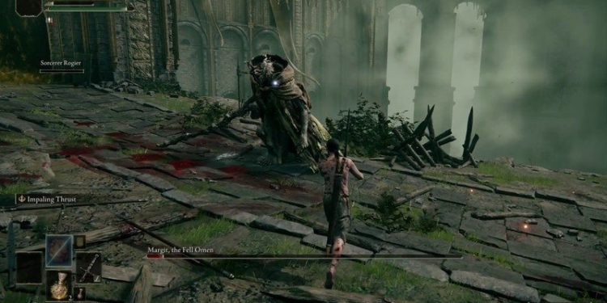

Matheus Cruz
15 de Março de 2022
Na sexta-feira, dia 25 de fevereiro houve o lançamento oficial de Elden Ring, uma obra da consagrada FromSoftware que possui uma das mais prestigiadas franquias de jogos eletrônicos da indústria. A obra se trata de um RPG de aventura com ação em tempo real e elementos de exploração em mundo aberto com gameplay "Souls Like".
Durante o período inicial de lançamento do jogo, suas notas de usuário em vários sites como Metacritic e OpenCritic estavam extremamente altas, tanto a crítica quanto os consumidores estavam com avaliações super positivas até o jogo apresentar perda de rendimento na sua versão de PC, o que acarretou em uma queda considerável na nota dos usuários.
O tempo de gameplay varia de acordo com o jogador, a especulação da indústria de jogos diz a média de 70 horas. Dependendo do estilo de jogo. Vale citar que até o momento a Run mais rápida do jogo enfrentando apenas três desafios (para pegar 1 dos 7 finais) é de 24 minutos e 37 segundos, sendo o mais completo 3 horas, 16 minutos e 41 segundos (com um dos finais principais).